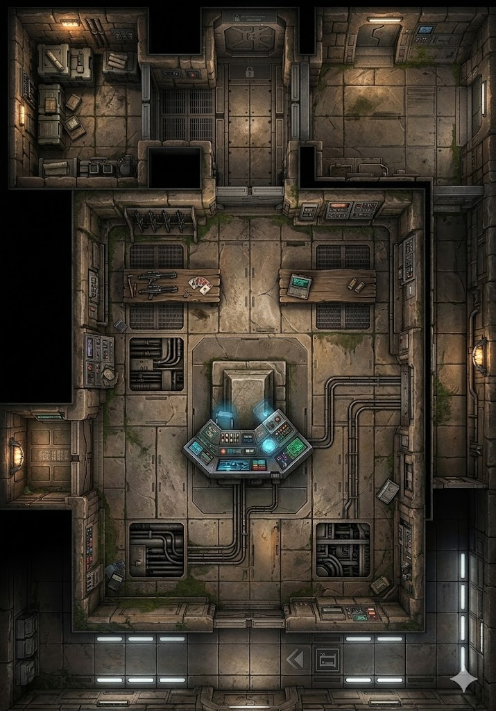

Reinforced storage behind mesh gating. Crated supplies, racked blaster rifles with cells removed. Disassembled weapons on the work table. The lock on the power cell cabinet is electronic — standard fortress keycode.
Vertical shaft access — the retractable walkway connects to upper levels when extended. Currently stowed and dark. Emergency handholds line the shaft walls. The control panel has two switches: walkway and lighting.
Floor-to-ceiling server racks handling fortress communications. Thick cable bundles route through ceiling conduit. The room runs hot from the equipment — raised floor grid conceals additional cabling underneath.
West alcove workstation behind a half-wall. Scattered documents, a disassembled carbine, macrobinoculars on the shelf. The chair is pushed back — whoever was working here left in a hurry.
Surveillance feeds on wall-mounted screens cycling through fortress corridors. The primary display chair is bolted to the floor — built for long watches. A half-eaten ration bar on the console shelf.
Three-faced control station with active holographic projector. Fortress wireframe in blue-white light. Environmental controls, security overrides, comm routing. The primary seat faces the blast doors.
West service corridor. Exposed high-voltage cabling, junction boxes with warning labels. Ozone smell, amber emergency lighting. Metal grating over cable trench.
South entrance with heavy blast doors — open, scarred with old damage. Guide lights along the floor. A directional arrow painted on the duracrete points toward the lower levels.
The constant hum of the command console's power draw. Server fans whining behind the comms array door. Water gurgling through pipes on the east wall. The click of pressure regulators. A draft whistling faintly through the open blast doors from below.
Flat white glow-panels on the operations floor — functional, not atmospheric. Blue holographic wash from the command console, shifting as the wireframe rotates. Amber emergency strips along the power conduit corridor. Blinking indicator lights on the server racks: amber, red, green. Brighter, colder light in the blast door vestibule.
Machine oil from the armory cage. Ozone from the power conduits. The mineral tang of condensation on bare pipes. Static charge in the comms array. Cold caf and gun-cleaning solvent at the intel desk. Damp, stale air drifting up through the blast doors from the dungeons below.
Warmer near the comms array and power conduits. Cooler and more humid near the environmental systems on the east wall. A steady draft from the blast doors keeps the vestibule cooler than the rest of the floor. The command console radiates warmth through the floor plates.
NARRATIVE FUNCTION: This is Demos's domain — the security hub between the upper court and the dungeons below. When Demos contacts Inquisitor Draco, he does it from the command console. When he monitors the heroes' movements through the fortress, he watches from the monitoring bank. When Darga flees and Demos locks down the lower levels, the controls are here.
TRANSIT POINT: The heroes pass through this level when descending to the dungeons to find Denia, and again when escaping upward through the secret passage. The blast doors at the south end lead to the dungeon stairwell. The upper passage connects to the court level above.
CONFRONTATION SPACE: If the heroes encounter Demos here, the command console provides partial cover (heavy durasteel, chest-height from seated position). The armory cage and comms array are enclosed rooms — defensible positions or traps depending on who gets there first. The power conduits and environmental systems provide flanking corridors on both sides of the main floor.
INTEL OPPORTUNITIES: The monitoring bank can reveal guard positions and patrol routes (Computers/Tech check). The comms array logs may contain Demos's transmissions to the Empire (Slicing check). The intel desk documents — if the heroes take time to read them — reference "the prisoner" and "lower containment."
ENVIRONMENTAL HAZARDS: The power conduits can be overloaded (Tech check) to kill lighting on this level. The environmental systems valve wheel can flood the floor with water from the pipes — cosmetic hazard, but creates difficult terrain and noise. The blast doors can be sealed from the command console — trapping anyone on the wrong side.